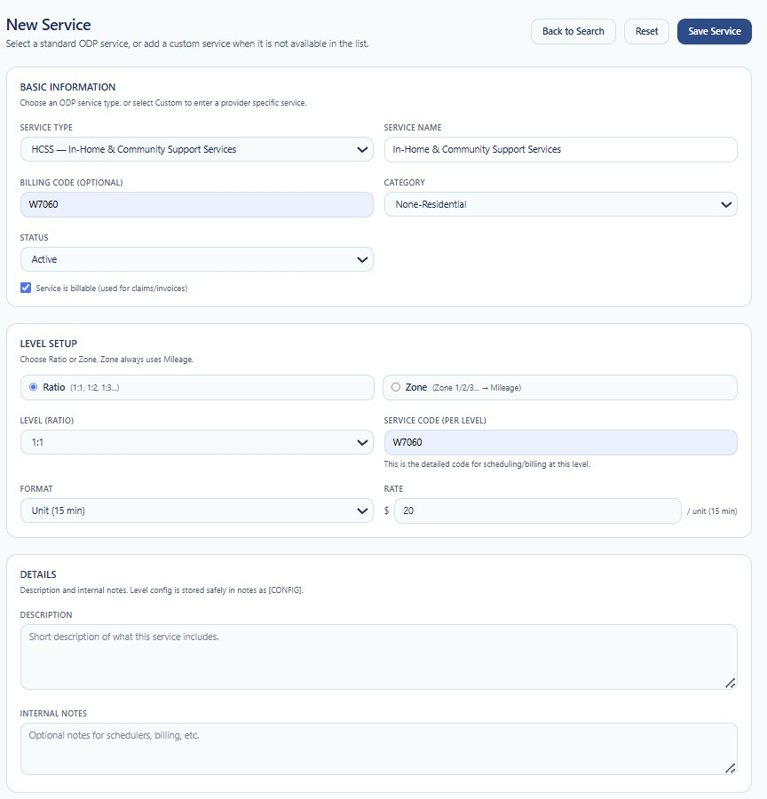

SERVICE MANAGEMENT
New Service
The New Service page allows an authorized user to create a standardized ODP service or define a provider-specific custom service when the required service is not available in the predefined list.
The information entered on this page determines how the service is identified, categorized, scheduled, billed, priced, and made available for use throughout True Care System.
New Service Page Overview
The page is divided into three primary configuration sections: Basic Information, Level Setup, and Details. Action buttons at the top of the page allow the user to return to the service search, reset the form, or save the completed service.

Figure 1. New Service page showing Basic Information, Level Setup, Details, and service action buttons.
Page Actions
| Action | Location | Description |
|---|---|---|
| Back to Search | Top-right | Returns the user to the service search page without completing the current service creation workflow. |
| Reset | Top-right | Clears or restores the service form so the user can begin entering the service information again. |
| Save Service | Top-right | Validates the entered information and creates the new service when the required fields are complete. |
Review all entered information before selecting Save Service. Service codes, units, rates, and billing settings may affect scheduling, authorizations, billing, payroll, EVV, and reporting.
Basic Information
The Basic Information section identifies the service and controls its general operational and billing status.
| Field | Control Type | Description |
|---|---|---|
| Service Type | Selection list | Selects the standard ODP service type. The example shown is HCSS — In-Home & Community Support Services. A custom option may be used when the required provider service is not included in the standard list. |
| Service Name | Text field | Defines the service name displayed throughout the system. When a standard service type is selected, the system may populate the corresponding service name. |
| Billing Code (Optional) | Text field | Stores the primary billing or procedure code associated with the service. The example shown is W7060. |
| Category | Selection list | Classifies the service for organizational and operational use. The example shown is Non-Residential. |
| Status | Selection list | Determines whether the service is available for active use. The example shown is Active. |
| Service is Billable | Checkbox | Indicates whether the service may be used for claims, invoices, or other billing workflows. |
Step 1 — Select the Service Type
- Open the Service Type selection list.
- Select the appropriate standard ODP service.
- Select the custom service option only when the required service is not available in the predefined list.
- Confirm that the displayed Service Name matches the intended service.
Standard services help maintain consistent names and codes across the organization. Custom services should be created only when provider-specific configuration is required and no appropriate standard service exists.
Step 2 — Complete Basic Service Information
- Review or enter the Service Name.
- Enter the Billing Code, when applicable.
- Select the appropriate Category.
- Select the initial service Status.
- Select Service is billable when the service is used for claims or invoices.
Billing Code Considerations
- Confirm the code against the approved payer or program source.
- Do not create duplicate services using the same operational purpose and billing code without a documented reason.
- Verify whether a modifier or level-specific service code is also required.
- Confirm that the code matches the selected service type.
Level Setup
The Level Setup section controls how the service is divided, measured, coded, and priced.
| Field | Control Type | Description |
|---|---|---|
| Ratio | Radio option | Uses a staff-to-individual ratio structure, such as 1:1, 1:2, or 1:3. |
| Zone | Radio option | Uses a zone-based structure. The interface notes that Zone configuration always uses mileage. |
| Level (Ratio) | Selection list | Selects the applicable service ratio level. The example shown is 1:1. |
| Service Code (Per Level) | Text field | Stores the detailed code used for scheduling and billing at the selected level. The example shown is W7060. |
| Format | Selection list | Defines how the service is measured. The example shown is Unit (15 min). |
| Rate | Currency field | Defines the monetary rate for the selected service format. In the example, the rate is $20 per 15-minute unit. |
Step 3 — Choose Ratio or Zone
Select the configuration method that applies to the service.
Ratio
Select Ratio when the service is delivered using a staff-to-individual relationship such as 1:1, 1:2, or 1:3.
- 1:1 — One employee serving one individual.
- 1:2 — One employee serving two individuals.
- 1:3 — One employee serving three individuals.
Zone
Select Zone when the service is configured using a zone-based level. The page indicates that Zone configuration always uses mileage.
Select only the level method that applies to the service. The chosen method affects the level options, service coding, format, and rate configuration.
Step 4 — Configure the Service Level
- Select Ratio or Zone.
- Select the applicable level from the Level list.
- Enter or verify the Service Code (Per Level).
- Confirm that the level-specific code is correct for scheduling and billing.
The per-level service code may match the primary billing code or may contain a more specific level-based code, depending on the provider's approved service configuration.
Step 5 — Select the Service Format
The Format field determines how service delivery is measured and how the rate is interpreted.
The interface example uses:
- Unit (15 min) — The service is measured in 15-minute units.
Depending on the available system configuration, other formats may be available for services that use a different unit structure.
Four 15-minute units equal one hour. A rate entered for this format is interpreted as a rate per 15-minute unit, as indicated beside the Rate field.
Step 6 — Enter the Rate
- Confirm the selected service format.
- Enter the approved amount in the Rate field.
- Review the unit label displayed beside the field.
- Confirm that the rate applies to the selected ratio or zone level.
In the screenshot, the configured rate is:
$20 per unit (15 minutes)
Confirm the rate against the provider's approved payer, contract, fee schedule, or internal service configuration before saving the service.
Details
The Details section stores a user-facing service description and internal operational notes.
| Field | Control Type | Description |
|---|---|---|
| Description | Multiline text | Provides a brief description of what the service includes, its purpose, or the type of support delivered. |
| Internal Notes | Multiline text | Stores optional internal information for schedulers, billing staff, administrators, or other authorized users. |
The interface notes that level configuration information is stored safely in notes as configuration data.
Step 7 — Enter Description and Internal Notes
Description
Enter a concise explanation of the service. The description should help authorized users understand what the service includes and how it is intended to be used.
Recommended information includes:
- Type of support provided.
- Primary service purpose.
- Program or operational context.
- Any important delivery limitations.
Internal Notes
Use Internal Notes for provider-specific administrative or operational information that is not intended to be the primary service description.
Examples include:
- Scheduling instructions.
- Billing reminders.
- Internal coding references.
- Provider-specific implementation notes.
- Rate or configuration review notes.
Step 8 — Review and Save the Service
Before saving, review each section carefully.
- Confirm the Service Type and Service Name.
- Verify the Billing Code and Category.
- Confirm whether the service should be billable.
- Verify the selected Status.
- Confirm the Ratio or Zone method.
- Verify the selected level and per-level service code.
- Confirm the Format and Rate.
- Review the Description and Internal Notes.
- Click Save Service.
After the service is saved successfully, return to the Service Search page to confirm that the new record appears in the service list.
Required Configuration Review
| Configuration Area | Review | Reason |
|---|---|---|
| Service Identity | Name, type, and category | Prevents duplicate or incorrectly classified services. |
| Billing | Billing code and billable status | Supports accurate claims and invoice processing. |
| Level | Ratio or zone and selected level | Controls how the service is structured and delivered. |
| Service Code | Per-level service code | Supports scheduling and billing at the configured level. |
| Units | Selected format | Defines how time or service delivery is measured. |
| Rate | Approved amount per unit | Supports correct billing and operational calculations. |
| Status | Active or inactive | Controls whether the service is available for operational use. |
Security
- Only authorized users should create or modify services.
- Service configuration access should be assigned according to the user's role and job responsibilities.
- Changes to billing codes, rates, status, and unit configuration should be reviewed before production use.
- Service creation and update activity may be recorded in Audit Logs.
HIPAA Considerations
- Do not enter individual-specific Protected Health Information (PHI) in the general service description.
- Do not place confidential individual information in Internal Notes.
- Use minimum necessary access when allowing users to manage service configuration.
- Maintain accurate service records to support compliance and audit review.
Troubleshooting
The service cannot be saved.
- Verify that all required fields are complete.
- Confirm that a Service Type is selected.
- Confirm that the Service Name is present.
- Verify the selected Ratio or Zone option.
- Confirm that a valid Level and Format are selected.
- Verify that the Rate contains a valid numeric amount.
The service code is incorrect.
- Review the Billing Code.
- Review the Service Code per Level.
- Confirm the selected service type and ratio or zone level.
- Verify the approved code with the payer or program source.
The service does not appear after saving.
- Return to the Service Search page.
- Clear any active search filters.
- Search using the service name or code.
- Confirm that the service status is Active.
- Refresh the page.
The service should not be used for billing.
Clear the Service is billable checkbox before saving, or update the service configuration if the record has already been created.
Frequently Asked Questions
Should I select a standard service or create a custom service?
Use the standard service when the appropriate ODP service is available. Use a custom service only when the provider requires a service that is not represented in the standard list.
What is the difference between Billing Code and Service Code per Level?
The Billing Code identifies the general billing or procedure code for the service. The Service Code per Level identifies the detailed code used for the selected ratio or zone level.
What does Service is billable mean?
It indicates that the service may be included in claims, invoices, or related billing workflows.
What does Ratio mean?
Ratio identifies the staff-to-individual service level, such as 1:1, 1:2, or 1:3.
What does Zone mean?
Zone is an alternative level configuration. The New Service page indicates that zone-based configuration always uses mileage.
How is a 15-minute unit calculated?
One unit represents 15 minutes of service. Four 15-minute units equal one hour.
Can I create a service as inactive?
Yes. Select the appropriate status when the service should be stored but not immediately available for active operational use.
What should be entered in Internal Notes?
Enter optional provider-specific information for scheduling, billing, administration, or internal configuration. Do not enter unnecessary PHI.